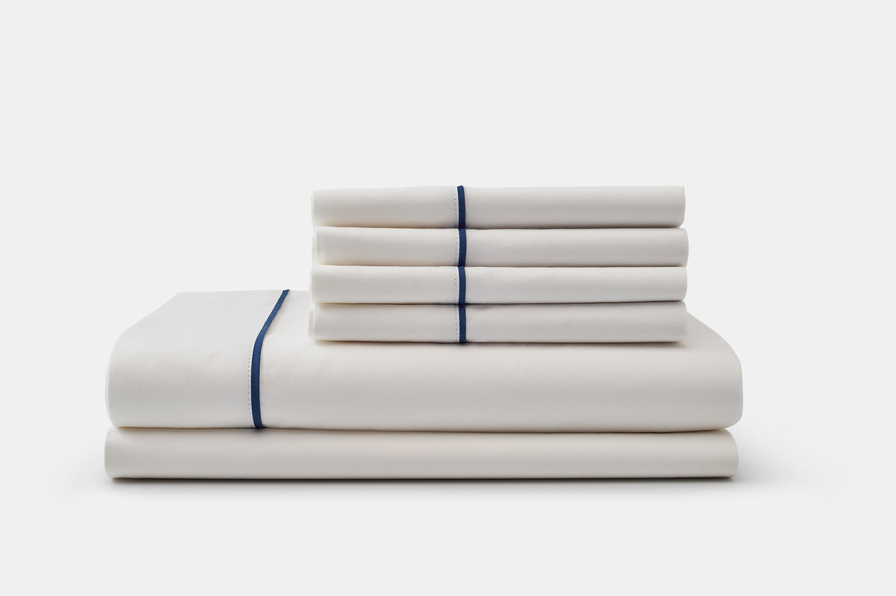
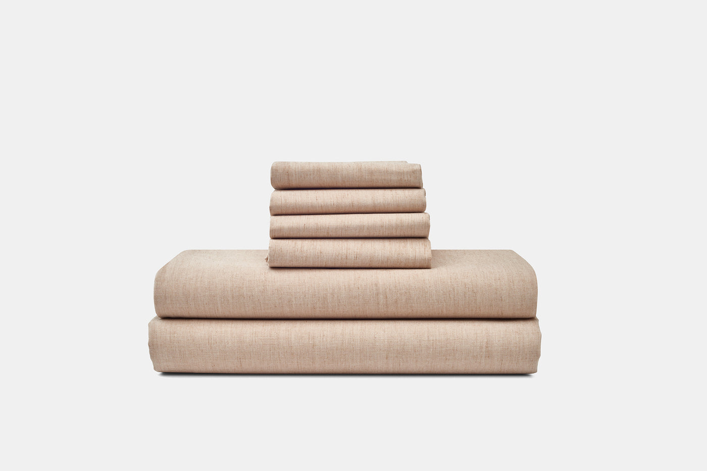

BUYING GUIDE
What are percale sheets?
Percale is a weave, not a fiber. Here is how it is made, how it feels on a bed, how it compares to sateen and how to care for it so it keeps getting softer.
By the American Blossom Linens team
Percale is a weave, not a fiber. Here is how it is made, how it feels on a bed, how it compares to sateen and how to care for it so it keeps getting softer.
Hotel beds have a particular feel. You slide in and the sheet is cool, smooth and a little crisp, with no shine at all. Most of the time that is percale. The word shows up on a lot of product pages, often without an explanation, so let's start with what it actually means.
Percale describes the way threads are woven together. It is a plain weave: each crosswise thread passes over one lengthwise thread, then under the next, and so on across the whole sheet. That one-over, one-under grid is the simplest and tightest pattern a loom can make.
Because the pattern is so tight, percale is usually made from fine, combed yarns with a thread count of around 180 and up. The fiber is most often cotton, though you will also find percale blends. When a label says "percale," it tells you about the structure of the fabric. It does not tell you what the fiber is or where it was grown.
The balanced grid leaves a matte surface and lets air move through the fabric easily. In practice that gives three things people notice on the first night:
Percale softens with use. A new set can feel slightly firm, and it relaxes over the first washes. Our own care instructions put it simply: these sheets get softer and better with time.
Sateen is the other common cotton sheet weave, and the two are easy to confuse in a store. Sateen uses a satin weave, where a thread floats over several others before going under one. Those longer floats catch the light and create a smooth, silky face.
| Percale | Sateen | |
|---|---|---|
| Weave | Plain weave, one over and one under | Satin weave, several threads over and one under |
| Feel | Crisp, cool, matte | Silky, smooth, slightly heavier |
| Look | Flat finish, no sheen | Soft sheen on the surface |
| Temperature | Breathable, sleeps cooler | Holds more warmth |
| Durability | Tight grid, resists snags and pilling | Long floats can snag more easily |
| Wrinkles | Wrinkles more, irons well | Wrinkles less |
| Best for | Warm sleepers, warm climates, year-round use | People who run cold or want a glossy look |
Neither weave is better in absolute terms. It comes down to how you sleep and what you like to feel against your skin.
Percale is a good match if you tend to sleep hot, if you live somewhere with long summers, or if you simply prefer a bed that feels fresh rather than slinky. It also suits people who like a neat, tailored look, since the matte surface reads clean and classic. Our Cotton Percale Bed Sheet Set is described as keeping you cool in the summer and warm in winter.



Since percale only names the weave, the quality depends on everything around it. Four points are worth checking.
The fiber. Look for 100% cotton if you want the classic feel. Our sheets are made of 100% USA-grown cotton, 45% of it organic.
The yarn. Combed, ring-spun yarns are smoother and stronger because the short fibers are removed before spinning. That is the process our spinning mill uses, as described on our process page.
The fit. A crisp sheet looks best pulled tight. Our fitted sheets have deep 16-inch pockets with encased elastic around the whole edge, and the flat sheets are cut larger to tuck in on every side.
The color. Percale comes in more than white. The sheet sets collection includes white, natural, Steel Grey and Chesapeake Blue, plus a Foxfibre® colored cotton version grown in a coyote brown shade, with no artificial dyes.
Percale is easy to live with. Machine wash cold with like colors, skip the bleach, tumble dry on low and take the sheets out as soon as the cycle ends to limit wrinkles. A warm iron gives back the crisp hotel finish if you want it. Wash sheets apart from towels and blankets, and do not cram the machine: sheets need room to move to come out clean. Wool dryer balls can replace fabric softener.
One tip from our care page: wash a new set once before the first night. It softens the fabric even more than when it arrives.
Yes. The one-over, one-under weave lets air pass through easily and leaves a matte, cool surface, which is why percale is the usual recommendation for people who wake up warm.
They do. Cotton percale starts out crisp and relaxes with each wash. Washing once before first use speeds this up.
No. Cotton is the fiber, percale is the weave. Percale sheets are most often cotton, but the word alone does not guarantee it, so check the fiber content on the label.
The tight plain weave and natural cotton crease more easily than sateen. Removing the sheets from the dryer promptly and smoothing them on the bed keeps wrinkles light. A warm iron removes them completely.
Sign up to get the latest on sales, new releases and more ...